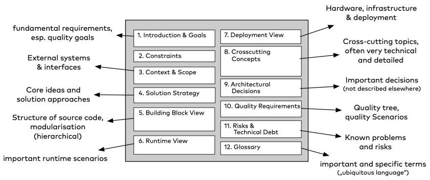

Software Architecture Documentation: A Comprehensive Handbook¶
목적¶
Analysis Communication
Document Template¶
Arc42- lightweight & Practical template for documentation of software대상- requirement, building blocks, interface, deployment- Class Diagram (Component Diagram)
- Sequence Diagram
- Interface Diagram
- 설계에 관한 Decision Making 포인트와 이유 
Tools (Arc42)¶
Data Schema Diagrams- MySQL Workbench, MS SQL Server Management Studio, ER DiagramFlowchart, Sequence Diagram- Vision, Omni Graffle, Enterprise Architecture, Draw.io-
Architecture Modeling Tool- Mural, Giffy, Figma, Lucid Chart -
System Component, their 역할, 인터페이스, interactions, behavior - SmartUML
C4 Model¶
C4Model- good approach to obtain a common set of abstractions. It's an abstraction-first approach and is notation independent. The C4 model looks at the static structures of a software system in terms of containers, components and code. And people use the software systems we build.
문서화 Template 목차 예시¶
SOFTWARE ARCHITECTURE DOCUMENT TITLE
Introduction¶
- Purpose of Document
- Software system's scope and context
- Version history and document conventions
Architecture Overview¶
- A high-level overview of the system's architecture
- System Objectives and Requirements
- System stakeholders and their roles
Architectural Layout¶
- Diagram of overall system architecture (E.g., C4 Model)
- Diagrams of subsystems and components illustrating system structure and integration
- Diagram of hardware and software configuration for deployment
Architectural Decisions¶
- Critical architectural decisions and their rationale
- Design patterns, architectural styles, and frameworks
- Justification for significant trade-offs and constraints
- System components
Data Management and Retention¶
- Database schema architecture
- Data access and storage mechanisms
- Handling of data security, integrity, and privacy
Quality Attributes¶
- Performance and Optimization Strategies
- Capacity planning and scalability
- Access controls and security measures
- Extensibility and maintainability guidelines
Interfaces and Integration¶
- APIs and external system interfaces
- Communication protocols and message formats
- Software architecture patterns and Criteria for Integration
Deployment and Infrastructure¶
- Deployment environment description (e.g., on-premises or cloud-based)
- Hardware and software specifications
- Configuration management and deployment procedures
Quality Control and Testing¶
- Testing approaches and tactics
- Critical test scenarios for architecture evaluation
- Performance and stress testing
Maintenance and Support¶
- System updates and software maintenance services
- Issues identified
- Support and troubleshooting instructions